高校赛自战解说
#1 高校赛自战解说 作者：有志青年 发表时间：2008-2-5 15:21:28
前言：
写自战解说，主要是想通过对对局的讲解来让初学的同学更好的了解五子棋一些基本的攻防，以及了解一些比较常见的定式。
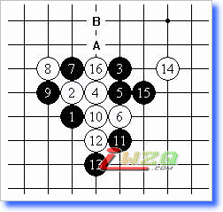
图一（下一手白棋B点冲四抓黑A点的三三禁手）
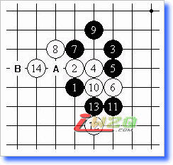
图二（白14后意图在B点冲四抓B点黑的三三禁手，此时黑已经无解，故投子认输）
以上是我在高校赛上的两盘棋，都是执白。之所以把这两盘棋搁一块来讲是因为这里都是涉及到疏星里几个常见的黑败着。（疏星是26种开局里的其中一种，不清楚的可以看下我以前的关于开局的介绍）
这两盘棋都是黑输了，那么黑的败着是哪一步呢？第九手！！！两盘棋的第九手都是错误的，也是初学者容易犯的一个最常见的错误。让我们看一下黑九后整个棋盘上双方的子力分布先。见图3和图4。此时，黑方都分别有A线和B线的两个活二，看似攻击力十足，而这点大概也就是为什么这两个九会被一些棋手所喜欢了。五子棋里有句话叫做“开局争二”。从这个观点出发的话，这两个九手，应该是没有错的。但是，马克思爷爷他老人家说了的呀，得实际情况实际分析嘛，对吧。事实证明这两个九都是错误的，因为他们都忽略了这时白棋的存在。白棋在这两个局面下MS都只有一个活二的存在，没什么杀伤力。但是，事实呢？
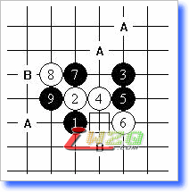
图三
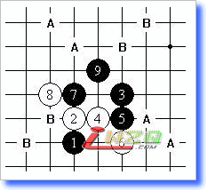
图四
让我们分别来看看白棋是如何的发动攻势吧。先来看图三的后续。见图五
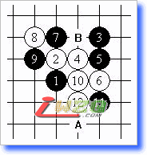
图五
如图白10向下活三，正确方向，黑11挡住白活三（若黑11反向防见参考图1），接着白12向下活三，正确方向！！这个时候，黑棋出现了两个防点，A或者B，防守A则胜法如实战的图一。防守B则见图六
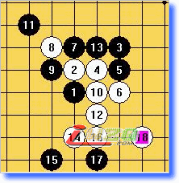
参考图1，如果黑13反防则胜法和图1一样
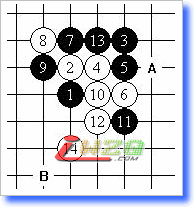
图六 这时再分黑挡A和挡B进行分析。
若黑挡A则
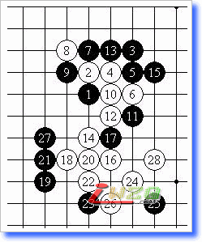
至此白28四三胜
黑挡B则见下图
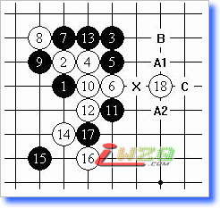
白18手后意图抓黑X处的三三禁手。这个时候黑方有图中字母标记几种下法来应对。让我们一一来看。
（一）挡A1或者A2这两个防点起的效果是一样的，都是为了通过活三来解除黑方X点的三三禁手点。而白棋的杀法也是一样的，因此就只列出一个的图了。
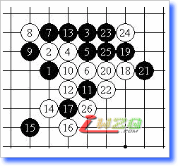
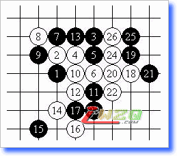
（二）挡B点时见下图
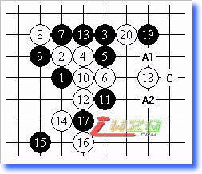
此后黑防A1或者A2胜法和上图几乎一样，只是顺序不同。在此不再重复。
防守C点则，见下图
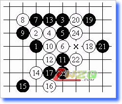
至此，白顺利抓黑X点三三禁手。
（三）若防守C点，则胜法和上图几乎一样，只是顺序有小小的不同，同样在此不再重复。
至此，这个黑9已经完全拆解完，如大家所看，白胜！！！
至于另一个黑九，欲知其变化如何，则见下回哈~~ o(∩_∩)o...
后续：
如果你对禁手不了解的话，建议你先看一下我关于禁手那篇文章，里面有专门介绍禁手的。
另外如果实在是看不懂或者你对五子棋有相当大的兴趣的话，可以在每周六的晚上7点以后到学生活动中心223来，我会在那恭候您的到来哈~~(*^__^*) 嘻嘻……
【有志注：作者为北科大学生】